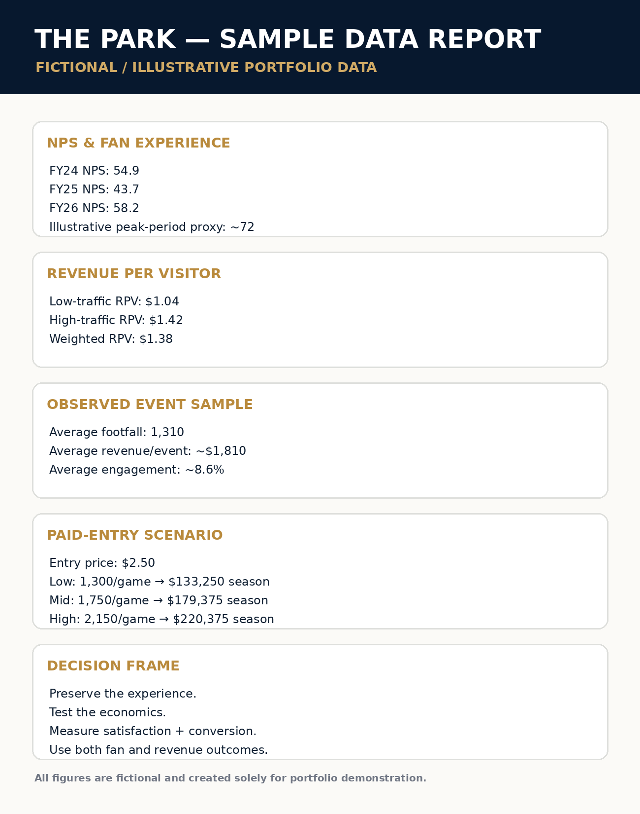

FEATURED CASE STUDY · SPORTS OPERATIONS · BUSINESS INTELLIGENCE
The Park
YoY Data Report
A decision-focused portfolio case study using fictional but realistic data to demonstrate fan-experience analysis, revenue efficiency, scenario modeling, and strategic recommendation.
01 / THE QUESTION
Is The Park simply an amenity—or a measurable business asset?
The analysis looks beyond total attendance and asks whether The Park can contribute meaningful fan-experience and revenue value across both high- and low-traffic event days.
The fictional model combines NPS proxies, engagement, footfall, revenue per visitor, and scenario projections to demonstrate how an analyst can evaluate the Park as both an experience layer and a potential monetized entry layer.
02 / WHAT THE DATA SAYS
Peak periods materially outperform the middle of the season.
The fictional FY26 average NPS is 58.2, while mid-season performance is modeled around 51.1, implying peak-period performance near 72.
Lower traffic does not eliminate per-fan value.
Low-traffic revenue per visitor is modeled at roughly $1.04 versus $1.42 on high-traffic days, with a weighted figure of $1.38.
The opportunity is better conversion—not simply more people.
The case suggests targeted adjustments on lower-performing dates could turn smaller crowds into stronger engagement environments.
03 / FROM OBSERVATION TO MODEL
What if existing traffic becomes a monetized entry layer?
Instead of assuming attendance growth, the fictional scenario applies a $2.50 entry price to realistic low, mid, and high traffic levels.
Illustrative season revenue · 41 games · $2.50 entry.
04 / THE MOVE
Preserve the experience.
Improve the economics.
The recommendation is to preserve The Park as part of the broader fan experience while testing a modest paid-entry concept with clear experience and revenue guardrails.
01 Preserve the experience as a differentiated pre-game environment.
02 Target lower-performing dates with weather-sensitive engagement adjustments.
03 Pilot a $2.50 entry model and measure conversion, satisfaction, and downstream spend.
04 Judge success on both experience and economics—not attendance alone.
05 / SAMPLE ANALYSIS
The work behind the story.
This redesigned sample report uses fictional figures to demonstrate event-level comparisons, NPS and revenue-per-visitor analysis, scenario modeling, and decision-oriented storytelling.

Open sample report ↗THE PORTFOLIO PRINCIPLE